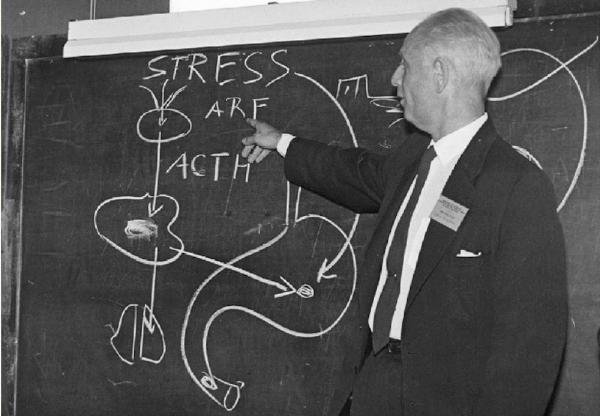

The most important physiologist of the 20th century
A visionary. A nonconformist. There are many labels one could assign to Ray Peat. His work stands out for its depth and coherence, surpassing most, if not all, alternative approaches to life, health, and vitality. Through this website, I aim to investigate and explain Ray’s contributions, build upon them in ways I deem logical, and celebrate an exceptional thinker who has positively transformed countless lives.
Latest Articles
Fatigue Not Just Atp

ATP is rapidly replenished within a muscle after a single repetition of lifting maximum weight (1RM), yet strength remains reduced for days. This phenomenon is observed both in muscle fatigue studies and among experienced powerlifters. The question is: Why does it happen? Mainstream cellular physiology, with its emphasis on membranes, pumps, channels, and “high-energy” phosphate bonds, …
Read MoreLifting the Hans Selye Way
The question of exercise within Peat-related circles has often been a topic of debate. While Ray Peat has repeatedly discouraged “breathless” exercise that may increase lactic acid, he has expressed more favorable views towards concentric weightlifting. Increasing and maintaining a significant amount of muscle mass not only promotes health (muscles burn Free Fatty Acids at rest) but …
Read More